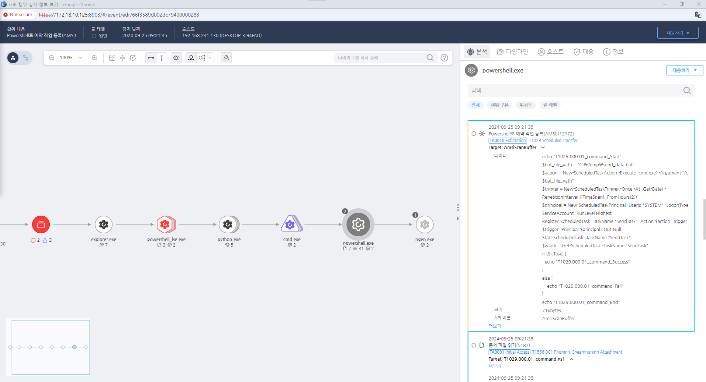

T1029.000.01 Scheduled Transfer
D3FEND
MITRE ATT&CK 액션을 기준으로 대응 방안을 작성
Detection
- CurrentProcess = "powershell.exe" AND
- Action = "AMSI_SCAN" AND
- AMSISCANDATA = "New-ScheduledTaskTrigger " AND "-At" AND "-RepetitionInterval" AND "Register-ScheduledTask"
Detection(EDR)

Response
공격자가 생성한 서비스를 삭제합니다.
Mitigations
정기적인 예약 작업 감사
- 시스템의 예약된 작업을 주기적으로 감사하여 의심스러운 작업을 식별하고 제거합니다.
예약 작업 권한 제한
- 예약 작업을 생성하거나 수정할 수 있는 사용자 권한을 최소화하여 불필요한 권한 상승을 방지합니다.
비정상적인 작업 알림 설정
- 예약 작업의 생성 및 수정 시 알림을 설정하여 비정상적인 작업이 발생할 경우 즉시 인지할 수 있도록 합니다.
파일 무결성 모니터링
- 예약 작업이 참조하는 파일의 무결성을 정기적으로 검사하여 비정상적인 변경을 탐지합니다.
Affected Techniques
Action 실행시 함께 영향을 받는 다른 Techniqes
| ATT&CK |
| T1059.001 |
| T1053.005 |
| D3FEND |
| D3-SJA Scheduled Job Analysis |
| D3-SCA System Call Analysis |
| D3-ETW Event Tracing for Windows |